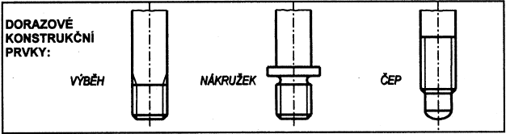

| Třída přesnosti | Průměr závitu | Vnější závit | Vnitřní závit | ||||
|---|---|---|---|---|---|---|---|
| Délka zašroubování | |||||||
| krátká S | normální N | dlouhá L | krátká S | normální N | dlouhá L | ||
| Toleranční pole | |||||||
| Přesná | velký d, D | 4h | 4g, 4h | 4h | - | - | - |
| střední d2, D2 | 3h | 4g, 4h | 5h | 4H | 4H, 5H | 6H | |
| malý d1, D1 | - | - | - | 4H | 5H | 6H | |
| Střední | velký d, D | 6g,6h | 6d, 6e, 6f, 6g, 6h | 6e, 6g, 6h | - | - | - |
| střední d2, D2 | 5g, 5h | 6d, 6e, 6f, 6g, 6h | 7e, 7g, 7h | 5G, 5H | 6G, 6H | 7G, 7H | |
| malý d1, D1 | - | - | - | 5G, 5H | 6G, 6H | 7G, 7H | |
| Hrubá | velký d, D | - | 8g, 8h | 8g | - | - | - |
| střední d2, D2 | - | 8g, 8h | 9g | - | 7G, 7H | 8G, 8H | |
| malý d1, D1 | - | - | - | - | 7G, 7H | 8G, 8H | |
| Třída přesnosti | Vnější závit | Vnitřní závit | ||||
|---|---|---|---|---|---|---|
| Délka zašroubování | ||||||
| krátká S | normální N | dlouhá L | krátká S | normální N | dlouhá L | |
| Toleranční značka | ||||||
| Přesná | (3h4h) | 4g, 4h | (5h4h) | 4H | 4H5H,5H | 6H |
| Střední | 5g, 6g, (5h6h) | 6d, 6e, 6f, 6g, 6h | (7e6e), 7g6g, (7h6h) | (5G), 5H | 6G, 6H | (7G), 7H |
| Hrubá | - | 8g, (8h) | (9g8g) | - | 7G, 7H | (8G), 8H |
| Jmenovitý rozměr závitu d [mm] | Rozteč P [mm] | Délka zašroubování [mm] | ||||
|---|---|---|---|---|---|---|
| krátká S | normální N | dlouhá L | ||||
| od | do | do | přes | do | přes | |
| 3 | 5,5 | 0,5 | 1,5 | 1,5 | 4,5 | 4,5 |
| 0,7 | 2 | 2 | 6 | 6 | ||
| 0,8 | 2,5 | 2,5 | 7,5 | 7,5 | ||
| 6 | 11 | 1 | 3 | 3 | 9 | 9 |
| 1,25 | 4 | 4 | 12 | 12 | ||
| 1,5 | 5 | 5 | 15 | 15 | ||
| 12 | 22 | 1,75 | 6 | 6 | 18 | 18 |
| 2 | 8 | 8 | 24 | 24 | ||
| 2,5 | 10 | 10 | 30 | 30 | ||
| 24 | 45 | 3 | 12 | 12 | 36 | 36 |
| 3,5 | 15 | 15 | 45 | 45 | ||
| 4 | 18 | 18 | 53 | 53 | ||
| Vnější závit | Vnitřní závit | ||||||||
|---|---|---|---|---|---|---|---|---|---|
| Průměr závitu | Jmenovitý rozměr závitu d [mm] | Základní úchylky | Stupně přesnosti | Průměr závitu | Jmenovitý rozměr závitu d [mm] | Základní úchylka | Stupně přesnosti | ||
| od | do | od | do | ||||||
| velký d | 5 | 45 | g,h | 6 | velký D | 5 | 45 | H | - |
| střední d2 | 5 | 16 | jk, k, m, mn | 1,2,4 | střední D2 | 5 | 30 | 2, 3, 4, 5 | |
| 18 | 30 | j, k, m, mn | 1, 2, 4 | 33 | 45 | 2, 5 | |||
| 33 | 45 | jh, k, mn | 1, 4 | malý D1 | 5 | 45 | 5, 6 | ||
| Závit d [mm] | Vnější závit | Vnitřní závit | |||||||
|---|---|---|---|---|---|---|---|---|---|
| od | do | Toleranční značky | |||||||
| 5 | 16 | 4jk6g | 1k6h | 2m6g | 1mn6h | 2H6H | 3H6H | 4H6H | 5H6H |
| 18 | 30 | 4j6g | 1k6h | 2m6g | 1mn6h | 2H5H | 3H6H | 4H6H | 5H6H |
| 33 | 45 | 4jh6g | 1k6h | 2H5H | 5H6H | ||||
| Jmenovitý rozměr závitu d [mm] | Materiál součástí s vnitřním závitem | Uložení | |||
|---|---|---|---|---|---|
| od | do | ||||
| 5 | 16 | ocel | 3H6H 2m |
2H6H 1k6h |
4H6H 4jk |
| litina | 5H6H 4jk | ||||
| slitiny Al a Mg | 2H6H 1mn6h |
||||
| 18 | 30 | ocel | 2H5H 1k6h |
4H6H 4j |
|
| litina | 5H6H 4j |
||||
| slitiny Al a Mg | 2H5H 1mn6h |
||||
| 33 | 45 | ocel | 2H5H 1k6h |
5H6H 4jh |
|
| litina | |||||
| slitiny Al a Mg | - | ||||

| Materiál součásti s vnitřním závitem | Rozteč P | Podmínky montáže | |
|---|---|---|---|
| do 1,25 mm včetně | od 1,5 mm včetně | ||
| Litina a slitiny hliníku | 2H5D 2r |
2H5C 2r |
|
| Litina, slitiny hliníku a slitiny horčíku | 2H5D(2) 3p(2) |
2H5C(2) 3p(2) |
Třídění na dvě skupiny |
| Ocel, vysokopevnostní a titanové slitiny | 2H4D(3) 3n(3) |
2H4C(3) 3n(3) |
Třídění na tři skupiny |